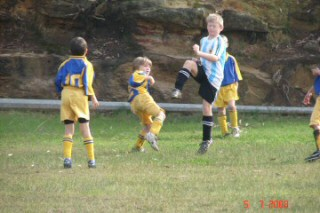
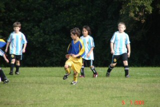

| Match Report - 05 July 2008 |
|
|
|
|
|
|
|
| U6 - White A |
North Ryde White Knights 3 - Ryde District Panthers 0

|
|
|
|
My, what a white knuckle ride it was for the supporters of this game on
Saturday. Parents, grandparents, siblings and bystanders alike were all
thrilled by performances by both teams as they gallantly defended their goals.
The Panthers were early on the attack and had the ball up in the Knights end
seconds after the starting whistle, but some good tackling and a great kick
by Hayden Fowler saved the Knights from what might have been an embarrassingly
early goal. Will Hanley was called off for injury time which was closely followed
by a very close call at the Panther's goal by Henry Barnes. A great tackle and
turn by Jasmine Parian made this match a real ding dong battle.
Despite some sound defense by the Knights and a huge kick up the mid field
by William Briese, the ball was kicked in by the Panthers for the first goal
of the day. Briese then continued his sterling form for the day by performing
a goal-saving tackle followed by a solid attempt at scoring.
Score at half time: Knights 0 - Panthers 1
Second half started with a long run by Ben Lau for a near goal, saved at
the last minute by the Panthers right on the goal line. You should have
heard the crowd gasp...
Jasmine took a long range shot and our man Briese took it for a brilliant
goal. One all. A super fast breakaway by the Panthers had the Knights chasing
them up field - they were so fast the Knights could only watch as the opposition
had a fair crack at an undefended goal. It was a near miss. The crowd were on the
edge of their seats!
Back to the other end just as fast and a very close call for Henry Barnes
again as his attempt at goal hit the crossbar. But William Briese had full
control of the next opportunity, and Goooaaallla!!! as they say in European
commentary. 2-1. The last few minutes of the game had both sets of supporters
yelling for all they were worth. Hayden Fowler displayed some fine turning skills
as he passed gracefully to William Briese for his third goal. The Panthers came
very close to taking their second goal, but the Knights were in all the wrong
places for them, for a closing score of 3 - 0 to the Knights.
What a game, what a game, what a game. We are getting better and better.
Well done North Ryde White Knights, well done Wayne. Thank you Bill and
Livia, and see you at the next nail-biter. Have a good holiday everyone.
- Sandie Barnes
|
|
|
| U7 - Green |
|
North Ryde Koalas - Macquarie Dragons A
|
|
|
|
With our coach and manager both away on Origin duty (sounds better than they
both had to be somewhere else) as well as one of our main strike weapons being
on 'loan' for the week, the green Koalas seemingly didn't have the ideal
preparation so not too much was expected of them. After a few shots on goal
and a quick 'pep' talk from the stand-in coach, looked like all was in
readiness. The only real concern was the lure of the playground that just
happened to be right next to our playing field and there were already comments
being made about the reserves playing in there while waiting to be called on!
As soon as the whistle blew, this enthusiastic outfit clicked straight into
gear and it was business as usual. Without the services of Jarvis for this
game, James and Jack both put up their hands to take on the extra workload
and were both terrific in getting involved in the thick of the action. Jack
was very cunning, often tricking his opponents into thinking he wasn't
watching the ball and them coming from nowhere to take the ball off them.
Lioda was powerful in defence, producing some effective tackles on bigger
opponents. Daniel was again strong at the back and held the Dragons at bay
a few times and didn't panic under pressure by kicking the ball to the safety
of the sideline when required.
Whilst we were without Jarvis this week we were very lucky to gain the
services of Hugh, who was outstanding! His combination with Charlie from the
kick-ins and general play was as if they played together every week. They were
instrumental in a lot of our chances on goal. It didn't take them long to work
out a tactic they often caught the Dragons napping.
Our Player of the Match this week went to Jaiden. With each week that passes,
Jaiden adds a new trick to his growing repertoire. He constantly goes looking
for the ball which sometimes results in him being injured, but being a tough
little cookie he gets straight back into it.
A very entertaining match played in a great spirit. Congratulations to both
teams and their supporters who added to the enjoyment. Thank you also to David
for taking on the manager's role at short notice and providing each of the
players with an encouragement award voucher, which they all thought was
terrific.
- Paul Bonaventura
|
|
|
| U8 - Blue |
North Ryde 2 - All Saints Hunters Hill 2

|
|
|
|
The Blues were very quick out of the starting blocks against a polished
and Argentinian-clad All Saints team this morning, and led the game by
2 goals to nil at the break after several superb moves up the field. Each
surge was invariably initiated by a bit of Tom H wizardry deep in the Blues
half, followed by some terrific teamwork and passing to take the ball into
the danger zone, and ending, on two occasions, with Charlie's timely boot
to find the back of the Saints' net.
Not so the second half though. The Blues seemed to run out of steam in
uncustomary fashion and were hard pressed to keep a rejunvenated All Saints
team at bay, who came back strongly to level the score at 2 goals apiece
which is how it remained until the final whistle blew.
The pictures capture some of the story...
|
Shannon bundles himself around the ball with some fancy footwork to
take control of the situation
|
Catch me if you can. Tom heads the pack with a charge down the line
while Patrick works his way down the middle
|
|
|
Jack keeps the Argentinians guessing. Is it Adam to the left, or Eli to
the right? Or maybe I'll have a bit of a go myself?
|

Eli takes on the big fella
|
|
|

David creates space in the Sea of Argentina
|
Christopher works the ball before the big fella arrives again
|
|
|
Eli carves a pathway through gaps in the defence
|
Charlie lets loose one of his long-range throw ins
|
|
|
Adam finds new ways to dispose of the Argentinians
|
A great game, well done Blues

- Mark Howard
|
|
|
|
|
|
This week, the game was a cracker against Pennant Hills even though we lost.
The first half was 4-0 and the second half was 2-1 The final score 6-1.
In fact, the whole team played a great game and put in a huge effort with lots
of support play and kicking to free space. We had many attempts at goal but
Pennant Hills defence was just too strong.
Every week, the kids are starting to show more skills which makes it hard to
pick out a player of the week. In the end, there were 3 chosen this week.
Liam Achurch championed for his great ball skills,
Peter Renouf and Andrhea
Calaminos for their excellency on the ball skills and support play.
Well done to our goal scorer Oscar Dixon.
Well done team!
- Scott MacCue (Coach)
|
|
|
|
|
|
It was only really a 20 minute drive out to Glenhaven and a very pleasant
one at that! The players were looking forward to playing with nets and posts
as well as a rope to keep the parents & supporters at arm's length... the
coaches were relishing the extra room to move too!
The first 10 minutes were very tight with both teams having their chances.
Julian did his usual number of fantastic big
kicks, Taylor was very busy getting in there
and having a go while Kireth was ever reliable
in defence getting back to help. Glenhaven had definitely played this game
before and they had a couple of sharp shooters who took advantage of our
momentary lapses in concentration (2 of them), and kicked 2 quick goals.
At the break it was 0 - 2 and the coaching staff commented that the
seemingly smaller pitch size contributed greatly to the players bunching
up. In the second half, Luke and
Ben certainly helped to change this sideline
impression with some great kicks and thoughtful passing to free space. The
score remained the same for the second half thanks to
Thomas who continues to impress, this week with
some skilful trapping and a couple of very big
clearances.
Maggie was again a standout - she is our star
striker and every week puts in 100% with persistent dribbling, running
and following through. We all enjoyed watching player of the match
Josh who was everywhere - even tried out a
stint as striker and was very thoughtful with his positional play.
Tim excelled again with some great pullbacks
and he is also taking to 'positional play' like a pro!
At the end of the game, the management team were at odds as to who to give
the encouragement award to - there were so many standouts and try hards.
Eventually, we decided on Brooke for her gallant
effort as first half goalie. We all need to remember that if a goal is
scored, it isn't really the goalies fault - rather, the 8 other players
that allowed the ball to get down that far.
Enjoy the holidays, you deserve so much with your willingness to learn and
happy approach to the beautiful game!
- Andrew Curdie (Coach)
|
|
|
|
|
|
Not only the existing two players down (Jared & Isaac) but we had Ben away
sick. Fortunately, we were able to call on Shannon Condon from U8 to make
up the 11 players. Thanks Shan!
A very early and chilly start, an 08:15 kick off at Galston. We initially
placed Josh in the goal and he did a great job, saving 6 attempts at goal
by WPH before being replaced by Ryan who was suffering from stomach cramps.
Under the circumstances Ryan did exceptionally well at goal keeping. In
particular he saved a goal from an unmarked striker. Well done!
Regrettably the 1st goal was an own goal from trying to head the ball out
of the goal from a corner kick. NRS defence worked hard. One notable player
was William who managed to block the ball on a number of occasions.
Unfortunately, WPH defence were very good at passing the ball back down
into NRS half with lofty kicks, seldom did the strikers see the ball much
to NRS frustration. James and Tom both tried to score goals from afar, but
on both occasions the ball landed in WPH GK hands. The two players who gave
it their all appeared to have run at least 20kms Aymon and 'Pocket Rocket'
Shannon are the youngest and smallest of the NRS team.
James came off 12 minutes to full time with an injury to the ankle from a
tackle. Consequently, NRS were down one player on the field. Fortunately,
the team pulled together to keep the score goalless for the remainder of
the game. Overall the boys played well and managed to reduce the score from
a previous match against WPH (the current leader in the comp). Player of the
match was awarded to Tom.
- Lesley Campbell (Manager)
|
|
|
|
|
|
On Saturday the boys took on a classy Epping side. Epping caught the boys
napping in the first couple of minutes and put one in the back of the net.
This stunned the boys into action but they were still not firing on all
cylinders. An attacking raid by Epping saw a shot hit the post. Elia made
some good runs early. The boys were starting to match it with Epping and
they were looking more threatening.
Epping continued to look good early in the second half but the boys rallied
and started to string some passes together and had some early chances.
Cameron produced a great corner in the 10th min of the second half but the
boys still remained goalless. A few minutes later Cam had a shot but the back
of the net was undisturbed. Soon after this Ben had a shot which just sailed
over the top bar. Again Ben started with a great ball to Luke who ran like
the wind and a goal looked likely but still no result.
Hayden had a shot late in the half but unfortunately we did not trouble the
score.
It was a very exciting game and the boys got better and better and really
started to look strong and were the better team in the second half. Everyone
played really well and it was a great team effort.
Next time Epping won't be so lucky!!
- David Burnard
|
|
|
|
|
|
Once again on Saturday the boys continued to be a statistician's worst
nightmare, as they continue to prove that statistics do lie. As in the
previous match the boys played the more enterprising soccer dominated
possession, territory, shots on goal and corners, however failed to secure
the points in what would have been a deserved win. Our boys once again
made all the running for much of the match with some enterprising play
by the forwards featuring some great passing and combinations that
eventually led to a well taken goal by Stephen BH after an excellent
cross from Lewis B.
The defence for much of the match was excellent and featured some fine
close marking of key players particularly by Tyler R who kept Thornleigh's
danger man out of the game whenever he was on the field, well done Tyler,
special mention also to Matt U who also had a strong game in defence
tackling strongly and disposing of the ball intelligently when he won
possession. Well done Matt & Tyler, probably your best games of the season.
A positive attitude at training does have its rewards!
Sam B, Liam T, Jake R and Tim B all played strongly at the back. Lewis B,
Dana B and Jordan C all continue to impress with their tenacity and the
combinations they have developed, they were ably supported by Victor C and
Havig K. John P was once again dominant and threatened to score whenever
he had the ball and his set plays were once again spot on.
Another big effort is required this Saturday if the team is to advance to
the semi final rounds, the team's efforts over the past few weeks have been
deserving of better results so with continued effort and an ounce of luck
hopefully the deserved result will be achieved.
- Bill Greer
|
|
|
|
|
|
First half highlights
Stand in Coach Barry seemed to have his plans for the team all worked out,
the only problem was that he hadn't let the boys know what was going on and
when Col asked him who was starting on the sideline, Barry's answer was 'I
have no idea'. Perhaps it was a brilliant tactical ploy by Baz to keep his
guys and the other guys guessing. It could also mean good things for Nth
Ryde today, time would tell.
Flocko was at his pre game best and after applying a whole tube of over
35's liniment he was ready to fire. The only problem was that he had left
his gorgeous daughter Grace in my care and had left her a broken chair to
sit on. It seems that Flocko with the council clean up the week prior had
thrown out the good working chair and kept the broken one. It all gave us
a good laugh and gave me something to write about again - thanks Flocko!
On to the game, Nth Ryde started with 3 reserves. Mark M was being a girl
and pretending to have a rib injury, Ado used every muscle he could muster
last week to score his first goal for the season, which meant he was sidelined
with some sort of ailment this week (slipped disc or something- no excuse
really) and Greg Smith was called into work (poor excuse Greg - soccer ALWAYS
comes first). This probably wasn't such a bad thing though as the boys were
due to face a double header this weekend and Macca had already made the
comment that Greg could play tomorrow's match all by himself as none of the
boys could back up! Coach Darren was playing up with his wife somewhere in
Sydney - but we had Baz!
So the whistle blew and the running began. With 3rd place playing 4th place
it was bound to be a good game, only one goal separated these teams at their
last encounter. The boys started well, Bruce had an early shot which flew
over the top of goals. Soon after, Macca and Pommie Pete both had shots
which missed. Nth Ryde then had another chance with some good pressure by
Macca on the keeper. On the other hand, Hicko, Smithy and Brownie were doing
a great job protecting the goals and delivering great balls through to the
rest of the boys. Flocko and Firgal in the midfield looked like spritely
young teenagers today, but would it last? It seemed Nth Epping Rangers had
some celebrities on their team, as there was one player who looked
distinctively like Belinda Neal MP, she, I mean he, had plenty of aggression
and let our boys know about it. Nth Epping gave three free kicks away in the
first half through their inability to control their aggression; at least
Pommie seemed to have his in check today! Not only were they aggressive but
the whining and winging, honestly our kids behaved better than Nth Epping.
Pierre replaced Bruce and as Bruce walked off, Nth Epping scored. Nth Ryde
had lost their composure and Nth Epping sounded more like girls as the game
went on. By half time Nth Ryde looked wrecked and as the ref blew half time,
Flocko's chair gave way with him in it! The girls (the partners that is - not
Nth Epping Rangers) were laughing their heads off!!
1-0 Nth Epping Rangers
Second half highlights
North Epping ran on and began the chatter once again in the belief that they
were playing all over Nth Ryde, but with some composure I had no doubt that
the boys would score quickly. Sure enough (I should be a psychic!), a blatant
hand ball left Nth Ryde with a free kick. The shot was taken and a rebounded
ball landed within Flocko's reach, he hit it and the ball hit the back of
the net! The equaliser, 1-1. Unfortunately though the boys were caught
unawares and Nth Epping hit back immediately. This goal didn't mean that
Nth Epping Rangers would play any better and surely they made plenty of
mistakes as Nth Ryde composed their play and in turn rattled the opposition.
Free kicks were given against Nth Epping Rangers as they continually pushed
and kicked illegally. The girls on the sideline then began to stand up for
our boys as one of the Nth Epping boys play turned ugly. He ended up being
our best player on the day however, as the amount of free kicks he gave away
allowed us back into the game. Brownie took a free kick about 30 metres out
from goal and while he was targeting one of our players, it didn't go down
that way and instead the balled curved a la David Beckham, touched nothing
and hit the back of the net. Well it's been at least 11 years since Brownie
scored a goal although I did find out that after the match Brownie admitted
that he scored his last goal in 1978! The drinks are on you today Brownie!
Pommie had a great game down the left flank, Bruce protected the goals
playing in the backline in the second half, Smithy rattled the opposition
and Pierre played brilliantly up front as usual. All in all it was a great
game by Nth Ryde against some poor opposition. There is no reason for the
boys not to make the semis from here as they have now cemented themselves
in fourth spot.
The girls need to be congratulated for lifting the boys to a 2-2 draw and
rattling the opposition. Beth and Joy were brilliant with their wit and
support and one of the two goals can be put down to their enthusiasm!
As a post script, the Nth Ryde boys played so well against Nth Epping that
All Saints Hunters Hill got word and decided to withdraw from the competition,
leaving Nth Ryde with a win on the 6th July and 14th July by forfeit. On the
14th Macca and Mark Van Hilten assisted the AA12's and Pierre had a run with
AA1's. Hopefully Pierre got his radar for scoring under control! Macca and
Mark for my mind were the stand out players for AA12 and assisted them to
their 2-1 win against Macquarie Dragons.
Well done and good luck boys.
- FF
|